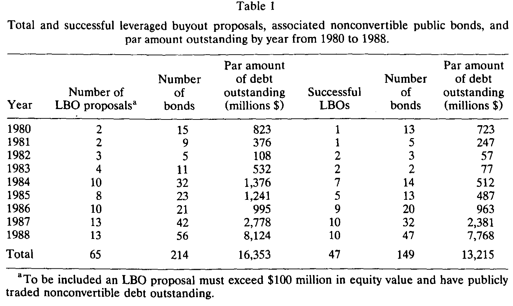
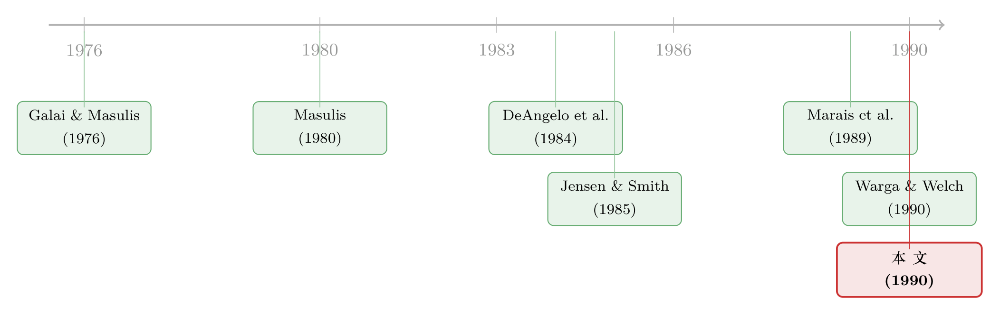

杠杆买断里，债主到底亏没亏？答案藏在契约的几行小字里
本文读的是 Asquith & Wizman (1990, Journal of Financial Economics)：在杠杆买断中，原有债券持有人平均确实遭受了显著的财富损失（整段事件期约 -2.0%），但这个「平均」掩盖了一道巨大的裂缝——契约保护强的债券反而升值 +2.6%，毫无保护的债券则狂跌 -5.2%。决定你亏还是赚的，不是杠杆本身，而是当年招股书里那几行你大概率没读过的限制性条款。
1 一桩各执一词的公案
八十年代的华尔街，杠杆买断 (leveraged buyout, LBO) 是最热的词。一群人借来一笔天文数字的债，把一家上市公司整体买下、退市、私有化。股东赚得盆满钵满——这一点学界早有共识：DeAngelo, DeAngelo and Rice (1984)、Lehn and Poulsen (1988)、Kaplan (1989) 一篇接一篇地证明，被买断公司的股东拿到了可观的溢价。
可是，钱从哪来？买断靠的是堆山一样的新债。一家公司账上的杠杆一夜之间翻几番，那些买断之前就持有这家公司债券的人怎么办？他们手里的旧债，会不会因为公司风险骤增而贬值，把财富悄悄转移给了股东？
这是个再自然不过的问题，理论上的答案也很干脆。Galai and Masulis (1976) 用期权定价的视角早就说清楚了：股权是公司价值的一份看涨期权，杠杆一升，风险一升，期权（股权）更值钱，而债券作为「卖出了看跌期权」的一方就要受损。Masulis (1980) 在债换股的交换要约里果然找到了债券的负收益。一切都指向同一个结论：债主该亏。
然而，1989 年一篇分量极重的论文却给出了相反的答案。Marais, Schipper and Smith (1989) 系统地考察了买断中各类证券持有人的财富变化，结论是——没有任何一类受损，债券持有人也没亏。
于是，市场上出现了一道刺眼的矛盾：理论说该亏，业界传闻（McDaniel (1986, 1988) 以及当时的财经媒体）说亏惨了，可最严谨的一篇实证论文偏说没亏。到底谁对？
本文就是来给这桩公案翻案的。而它翻案的方式，妙就妙在没有简单地站队「亏」还是「不亏」，而是指出：问「债主平均亏不亏」这个问题本身就问错了。
2 真正关键的一步：把债券按「契约保护」分桶
先说方法。这是一篇标准的事件研究 (event study)。作者用标准普尔《债券指南》(S&P Bond Guide) 的月度价格，算出每只债券的月度收益，再减去与其久期匹配的 Shearson-Lehman-Hutton 公司债指数，得到异常收益 (abnormal return)。他们看三个窗口：买断公告当月的「一个月」、公告前后各两个月的「四个月」，以及从公告前两月一直到买断完成（或撤回）后两月的「整段事件期」。
接着，一个自然的问题是：既然 Marais, Schipper and Smith 也做了事件研究，为什么结论会反过来？
本文给出的回答，正是它最核心的贡献——契约保护的横截面差异。作者把每只债券按招股书里的限制性条款 (covenant) 分成三桶：
- 强保护 (strong protection)：含有(1)合并后存续公司的净值限制 (net worth restriction)，或(2)对总有息债务的上限 (limit on total funded debt)，或(3)买断前已由抵押、留置或偿债基金 (defeasance) 担保的债券。这类条款在买断中几乎必然被触发，债券要么被赎回、要么条款被改善。
- 弱保护 (weak protection)：没有上述强条款，但有(1)对优先级有息债务的限制，或(2)对股利与特别派现的限制。是否被触发，取决于买断用什么方式、借多少钱来融资——比如用高收益的次级债，就可能绕过这些弱条款。
- 无保护 (no protection)：以上条款一概没有。
这一步为什么关键？因为如果一只受强契约保护的债券，其条款被买断触发，那么公司必须先把这只债赎回或补偿债主，买断才能继续。而被赎回的债券若原本折价交易，债主反而能因此获利。反之，无保护的债券不需要被退出、也不需要补偿，它就只能眼睁睁地承受杠杆飙升带来的贬值。
换句话说，契约不是装饰，它是一道法律意义上的保护伞。把所有债券混在一起求平均，等于把撑着伞的人和淋着雨的人放进同一个水桶里量体温——平均下来温吞吞，什么都看不出来。
3 数据：214 只债，65 个买断目标
样本来自 1980–1988 年。作者从 W. T. Grimm 的《Mergerstat Review》等多个并购数据库里搜罗买断公告，再用三条标准筛选：(1) 私有化意图的整体股权收购；(2) 股权价值超过 $100 million；(3) 目标公司至少有一只公开交易的非可转换债券。
最终得到 65 个买断目标，旗下共 214 只公开债券，买断前面值合计 $16.4 billion。其中 47 个买断成功完成，对应 149 只债券、面值 $13.2 billion。买断活动在 1984 年之后急剧升温——这一点在逐年的样本分布里看得很清楚。

Table 1
契约信息的处理也值得一提。作者尽可能直接从招股书 (prospectus) 里读条款（214 只里有 171 只能拿到招股书），而没有偷懒只用 Moody's 工业手册——后者正是 Marais, Schipper and Smith 用的来源。作者发现 Moody's 在 171 只债券里有 36 只是不完整或错误的：它会漏掉低于某个发行金额的债券，也不报告诸如「合并后净值限制」这类恰恰在买断里能咬人的条款。识别策略再精巧，喂进去的契约数据若是错的，结论也就靠不住了——这是本文在数据上下的一步硬功夫。
4 反转出现：平均是亏，但裂缝大得惊人
先看那个被「平均」掩盖的总体数字。整个 214 只债券的样本里，一个月异常收益是 -1.1%（标准误 0.4%），四个月是 -2.2%（0.6%），整段事件期是 -2.0%（0.7%）。负收益的债券占比，一个月窗口 60.3%、四个月 66.7%、整段期 57.4%。作者直言，这是当时已发表文献中绝对值最大的债券异常收益。光这一步，就已经把 Marais, Schipper and Smith「没亏」的结论推翻了。
但真正的戏在分桶之后。整段事件期的平均异常收益：
- 强保护：
+2.6%（标准误1.1%），只有28.6%的债券为负； - 弱保护：
-0.7%（1.6%）； - 无保护：
-5.2%（1.1%），高达73.9%的债券为负。
你看，强保护的债主不但没亏，反而赚了 2.6%；无保护的债主则平均蒸发了 5.2%。一正一负，相差近 8 个百分点。把它们摁进同一个平均数里，自然就温吞吞地看不出名堂——这正是为什么 Marais, Schipper and Smith 会得出「没亏」的结论：他们的样本只有 30 只债，跟到买断完成的仅 10 只，而且没有按契约分类。作者甚至点出：只要他们那 10 只债里有一半是强保护的，就足以解释他们那个又小又不显著的结果。
更妙的是「行为」层面的证据。如果契约真的是一道保护伞，那么受保护的债券应该更可能在买断中被退出，而不是被晾着。结果完全吻合：在能拿到招股书的债券里，14 只强保护债券只有 4 只（28.6%）在买断后仍存续，其余 5 只被赎回、4 只被要约收购、1 只被偿债基金清偿；而 68 只无保护债券里，竟有 59 只（88.1%）原封不动地留在那里——没人管你的死活。收益和「债券归宿」两条线索，指向同一个答案。
5 一个耐人寻味的「过山车」
这里还藏着一个反直觉的细节，值得停下来看一眼。在成功完成的买断里，15 只强保护债券的四个月异常收益竟是 -4.6%（80.0% 为负），可到了整段事件期却翻成了 +2.1%（仅 26.7% 为负）。同一批债券，先大跌、后回升。
为什么？作者给的解释很有人情味：有些债主其实没完全搞懂自己手里这只债的契约保护，一听到买断公告就慌忙抛售；而在很多债券交易极其清淡的市场里，几笔恐慌盘就足以打出 -4.6% 的账面跌幅。等到尘埃落定、契约被触发、债券被高价赎回，价格才回到它本该在的地方。这提醒我们：公告当下的短窗口收益，往往只是市场对最终财富效应的一个带噪声的概率估计，而整段事件期才更接近真相。
6 落点：损失虽真，却只是股东盛宴的零头
把上面这条线索讲透之后，本文还顺手回应了最初那个「钱从哪来」的问题。债主确实亏了，可这笔损失相对于股东在同一桩买断里拿到的巨额收益，只是个零头。也就是说，从债主身上转移的财富，远不足以解释股东的所得——LBO 创造的价值，大头另有来源（运营改善、税盾等，可参见《杠杆买断那 42% 的溢价，到底是谁掏的钱？》）。
而文章结尾抛出的那个「异象」，今天读来更觉意味深长：作者记录到，1980 年之后发行的债券，传统契约的使用反而在下降。既然强契约能实实在在地保护债主免于买断中的损失，那为什么在买断最猖獗的八十年代，债券契约却越用越少？与此同时，市场开始引入「毒丸条款」(poison put) 这类新条款来防范并购与买断带来的「事件风险」(event risk)。一边是老工具的退场，一边是新工具的登场——这道张力，正是后来「事件风险契约」整条研究线的起点（关于把评级触发写进契约的思路，可参见《把「降级就还钱」写进债券契约》）。
7 文献脉络
把这篇论文放回它的坐标系里，它其实站在两条线的交汇处。
一条是理论预测线：Galai and Masulis (1976) 用期权框架预言了杠杆上升对债主的负向再分配，Masulis (1980) 在交换要约里给了它第一份实证支持，Jensen and Smith (1985) 则把它纳入代理理论的总框架。
另一条是「债主无损」的反方线：Kim and McConnell (1977)、Asquith and Kim (1982) 在杠杆增加型并购中发现了债务的「共同保险」效应（债主因合并而更安全），Marais, Schipper and Smith (1989) 把这一脉推到顶峰，宣称买断中各类证券持有人皆无损失。
本文（连同几乎同时的 Warga and Welch (1990)）正是站在这两条线之间，用更大的样本（214 只 vs. MSS 的 30 只）和契约分桶这把新尺子，把「平均无损」的表象切开，露出底下「强者赚、弱者亏」的横截面真相。它没有否定任一方，而是指出双方都对了一半——取决于你看的是哪一桶债。

顺带一提，本文对 Warga and Welch (1990) 的对账也很诚实：后者报告 1985 年 1 月至 1989 年 4 月的一个月、四个月异常收益为 -1.2% 和 -6.0%；本文把样本限到 1985–1988 年，得到 -2.3% 和 -3.5%，差异同样可归因于样本规模和契约分布的不同（Warga-Welch 也没考虑契约）。两篇独立研究在「债主确实亏」这一点上殊途同归。
8 评论与延伸（Q&A + 研究方向）
(a) 几个可能的疑问
Q：横截面上「强保护赚、无保护亏」，会不会只是因为强保护债券本来就在折价交易，被按面值赎回才显得赚？
部分是，但作者已经把这条路堵上了一半。全样本
27只被赎回的债券里，只有3只在公告前月末价格高于赎回价，且超出幅度极小（最大的一只 Cox Communication 债报102.75、赎回价101.00）。所以「折价债被按面值赎回」的获利渠道是存在的，但它解释不了强保护组整体+2.6%的水平——多数受保护债券是因为条款被触发、地位被改善而升值，而非单纯的赎回套利。
Q：作者承认「强/弱/无」的分类并不精确，那结论还可信吗？
恰恰相反，分类的不精确反而让结论更稳健。作者只按「有没有某类条款」分桶，并不衡量条款的触发阈值（比如总债务上限具体定在哪个水平）。这意味着分类里掺了噪声——比如有强保护债券因买断没借够债而未被触发、有 Wickes 公司的债券因新控股公司在母公司层面发债而绕过了限制。噪声只会让组间差异被低估，而结果依然能拉开近 8 个百分点，说明真实的契约效应只会更强。
Q：用月度价格、且很多债券交易清淡，标准误会不会被严重低估？
这是本文最该被追问的地方。标准误是横截面的（因为长期缺价格使时序标准误不可行），且很多公司有多只债券、收益彼此不独立。作者意识到了，所以补做了「按买断而非按债券」聚合的检验，并指出清淡市场里几笔交易就能打出
-4.6%这种短窗口跳动。但以今天的标准看，缺乏对横截面相关性的正式校正，仍是识别上的一处软肋。
Q：这跟 Kim-McConnell 的「共同保险」效应矛盾吗？为什么并购里债主没亏、买断里却亏了？
不矛盾，反而互补。普通并购（尤其是与一家健康公司合并）会带来现金流的共同保险，降低违约风险，债主可能受益；而杠杆买断是把杠杆单方向推高、不带来对手方资产的稀释式保险，纯粹是风险上升。两类事件对债主的方向相反，正说明「再分配」与「共同保险」是两股可以并存、相互抵消的力量。
Q：契约保护既然这么有用，为什么 1980 年后反而用得更少？
本文只记录了这个事实，没有完全解释它，这也是它留给后人的悬念。一个可能是发行成本与融资灵活性的权衡：强契约约束了公司未来的财务弹性，在八十年代旺盛的并购融资需求下，发行人和早期债主可能都低估了「事件风险」。市场随后用毒丸条款这类新工具来补位，恰恰说明老契约的退场是一次集体的定价失误，而非理性选择。
Q：债主的损失只是股东收益的零头，那是不是意味着「债主被剥削」根本不是 LBO 的重要议题？
从「价值从哪来」的角度看，是的——剥削债主解释不了股东的巨额所得。但从契约设计与公司治理的角度看，它依然重要：它证明了限制性条款是有真金白银价值的保护机制，也为后来债券契约、评级触发、治理与债券定价（参见《一道被「收购门」掰弯的治理符号》）的研究提供了第一块基石。
(b) 几个可能的研究问题与提案
1. 事件风险契约的「定价」与「采用」之谜
【经济故事】本文记录了 1980 年后传统契约的衰落与毒丸条款的兴起，却没解释这个看似矛盾的转换。如果强契约能保护债主，理性的发行人应在发行时为「无契约」支付更高的票息溢价。检验这条溢价是否随买断浪潮的强度而变化，能直接判断市场是否在为事件风险定价。 【可行性】中。需要发行时的契约明细（今天可用 Mergent FISD / DealScan）与一级市场票息数据；识别上可借买断活动在行业-年度层面的外生波动做横截面比较。数据可得，难点在干净地度量「事件风险暴露」。
2. 把本文搬到现代公司债流动性框架下重做
【经济故事】本文的一大软肋是债券价格清淡、月度、可能含报价而非成交。今天 TRACE 提供了逐笔成交，可以把「契约保护 → 异常收益」的检验放在高频、真实成交价上重做，并区分价格变动里多少来自基本面、多少来自流动性枯竭（本文那个
-4.6%→+2.1%的过山车很可能就是流动性效应）。 【可行性】高。TRACE（2002 年后）+ FISD 契约数据 + 现代 LBO 样本（Capital IQ）即可。识别清晰，唯一限制是现代纯 LBO 中公开债占比下降，样本量可能不及预期。
3. 外资持有人在事件风险中是「先知」还是「后觉」？
【经济故事】本文发现部分债主因「读不懂自己的契约」而恐慌抛售，制造了短窗口的过度下跌。一个自然的延伸是：不同类型的持有人（本土机构 vs. 外资、被动 vs. 主动）在买断公告后的交易行为是否不同？外资是否因信息或法律理解的劣势而更易踩中那个「过山车」的低点？ 【可行性】中。需要债券层面的持有人构成数据（如 eMAXX / Lipper 持仓）与买断事件对齐。识别可行但偏描述性，要做出因果需要额外的外生冲击（如某类条款的监管变更）。
4. 契约衰落是发行人的选择，还是债主的让步？
【经济故事】1980 年后契约减少，究竟是发行人压低了保护，还是债主在旺盛供给下主动放弃了保护以换取更高票息？把同一发行人在买断前后、或同一时点不同保护档债券的票息-契约组合拆开，能分辨这是供给侧还是需求侧驱动。 【可行性】中。需要长时间跨度的发行级契约面板，并控制信用质量与久期；识别上可用利率环境与并购浪潮作为时间维度的工具。doable，但要小心契约与信用质量的内生共变。
参考文献
- Asquith, P. and T. A. Wizman (1990). Event Risk, Covenants, and Bondholder Returns in Leveraged Buyouts. Journal of Financial Economics 27, 195–213.
- Asquith, P. and E. H. Kim (1982). The Impact of Merger Bids on the Participating Firms' Security Holders. Journal of Finance 37, 1209–1228.
- DeAngelo, H., L. DeAngelo and E. Rice (1984). Going Private: Minority Freezeouts and Shareholder Wealth. Journal of Law and Economics 27, 367–401.
- Galai, D. and R. Masulis (1976). The Option Pricing Model and the Risk Factor of Stock. Journal of Financial Economics 3, 53–81.
- Jensen, M. and C. Smith (1985). Stockholder, Manager, and Creditor Interests: Applications of Agency Theory. In E. Altman and M. Subrahmanyam, eds., Recent Advances in Corporate Finance (Richard D. Irwin, Homewood, IL).
- Kaplan, S. (1989). The Effects of Management Buyouts on Operations and Value. Journal of Financial Economics 24, 217–254.
- Kim, E. H. and J. McConnell (1977). Corporate Mergers and the Co-insurance of Corporate Debt. Journal of Finance 32, 349–366.
- Lehn, K. and A. Poulsen (1988). Free Cash Flow and Stockholder Gains in Going Private Transactions. Journal of Finance 44, 771–787.
- Marais, L., K. Schipper and A. Smith (1989). Wealth Effects of Going Private for Senior Securities. Journal of Financial Economics 23, 155–191.
- Masulis, R. (1980). The Effects of Capital Structure Changes on Security Prices: A Study of Exchange Offers. Journal of Financial Economics 8, 139–178.
- McDaniel, M. (1986). Bondholders and Corporate Governance. The Business Lawyer 41, 413–460.
- Warga, A. and I. Welch (1990). Bondholder Losses in Leveraged Buyouts. Working paper (University of California, Los Angeles).